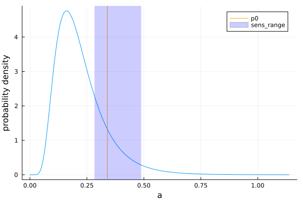

Getting started
Assume we have a simple model, fsens, which depends on two parameters, a and b and produces two outputs, target1 and target2.
fsens = (a,b) -> (;target1 = 10a + b -1, target2 = a + b -0.5)Our knowledge about reasonable model parameters is encoded by a prior probability distribution. We can specify those by the kind of distribution, its mode and an upper quantile.
using SubglobalSensitivityAnalysis, Distributions
install_R_dependencies(["sensitivity"])
paramsModeUpperRows = [
(:a, LogNormal, 0.2 , 0.5),
(:b, LogitNormal, 0.7 , 0.9),
]┌ Warning: RCall.jl: Loading required namespace: sensitivity
│ Registered S3 method overwritten by 'sensitivity':
│ method from
│ print.src dplyr
└ @ RCall ~/.julia/packages/RCall/YrsKg/src/io.jl:172The output DataFrame reports
- the estimated index and confidence bounds (column value, cflower, cfupper)
- for each of the parameter/index_type/output combinations
We can provide this directly to estimate_subglobal_sobol_indices below, or we estimate/specify distribution parameters directly in a DataFrame with column :dist.
df_dist = fit_distributions(paramsModeUpperRows)| Row | par | dType | mode | upper | dist |
|---|---|---|---|---|---|
| Symbol | UnionAll | Float64 | Float64 | Distribu… | |
| 1 | a | LogNormal | 0.2 | 0.5 | Distributions.LogNormal{Float64}(μ=-1.60944, σ=0.467504) |
| 2 | b | LogitNormal | 0.7 | 0.9 | Distributions.LogitNormal{Float64}(μ=0.847298, σ=0.688751) |
While these distributions are reasonable for each parameter, there are probably parameter combinations that produce unreasonable results. Hence, we want to restrict our analysis to a parameter space around a central parameter vector, p0.
p0 = Dict(:a => 0.34, :b => 0.6)By default a range around p0 is created that covers 20% of the cumulative probability range, i.e a span of 0.2.
For this range 20% of the area under the probability density function is covered.
The design matrix for the sensitivity analysis is constructed in the cumulative densities and transformed to parameter values. For each of the parameter vectors of the design matrix an output is computed. Now the Sobol indices and their confidence ranges can be computed for this output.
All this encapsulated by function estimate_subglobal_sobol_indices.
# note, for real analysis use a larger sample size
df_sobol = estimate_subglobal_sobol_indices(fsens, df_dist, p0; n_sample = 50)
df_sobol| Row | par | index | value | cf_lower | cf_upper | target |
|---|---|---|---|---|---|---|
| Symbol | Symbol | Float64 | Float64 | Float64 | Symbol | |
| 1 | a | first_order | 0.996537 | 0.950098 | 1.04298 | target1 |
| 2 | b | first_order | -0.108823 | -0.365313 | 0.147667 | target1 |
| 3 | a | total | 1.11048 | 0.85002 | 1.37094 | target1 |
| 4 | b | total | 0.00214538 | -0.0619349 | 0.0662256 | target1 |
| 5 | a | first_order | 0.77079 | 0.684506 | 0.857074 | target2 |
| 6 | b | first_order | 0.205971 | -0.0337411 | 0.445682 | target2 |
| 7 | a | total | 0.891658 | 0.608463 | 1.17485 | target2 |
| 8 | b | total | 0.177606 | 0.136033 | 0.219178 | target2 |
The resulting DataFrame reports:
- the estimated Sobol indices and their confidence bounds (columns value, cflower, cfupper)
- for all the combinations of parameter, which index, and output (columns par, index, target)